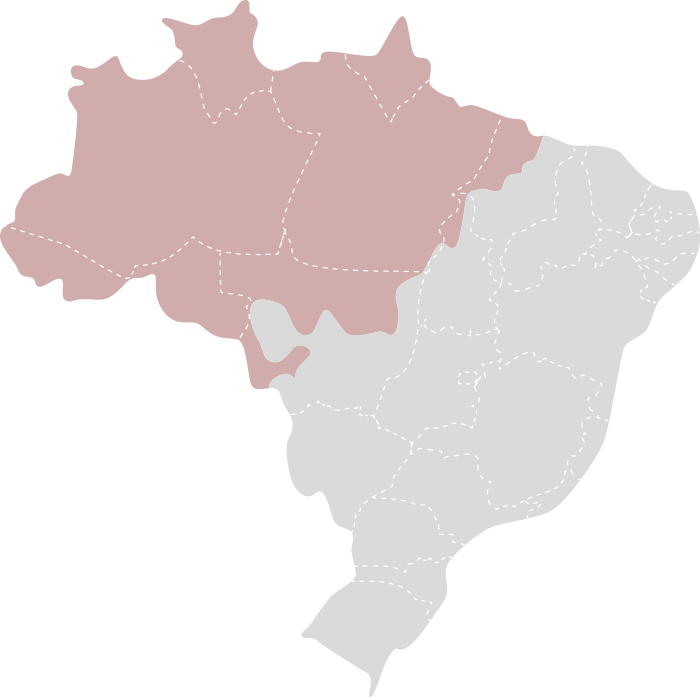

Bioma Amazônia
A Amazônia é o maior bioma tropical do planeta e um dos mais diversos em termos de biodiversidade. Ocupando uma
vasta região no Norte do Brasil e se estendendo por vários países da América do Sul, como Peru, Colômbia e
Venezuela, a Amazônia é conhecida por sua imensa floresta tropical e seu papel crucial no equilíbrio climático
global.

Características Principais:
-
Vegetação
- Floresta Tropical: A Amazônia é dominada por florestas tropicais densas e perenes, onde
a vegetação é exuberante e variada. As árvores são geralmente de grande porte, com folhas largas e
adaptadas a condições de alta umidade.
- Estratificação: A floresta apresenta várias camadas, incluindo o dossel (camada
superior onde as copas das árvores se encontram), o sub-bosque (camada intermediária com arbustos e
pequenas árvores) e o solo da floresta, onde ocorre a decomposição da matéria orgânica.
-
Clima
- Tropical Úmido: A Amazônia possui um clima equatorial, com altas temperaturas ao longo
do ano, geralmente variando entre 24°C e 27°C. As chuvas são abundantes, com precipitação anual que pode
ultrapassar 2.000 mm. A umidade relativa do ar é alta, contribuindo para a formação de neblina e nuvens.
-
Hidrografia
- Rios e Igapós: A Amazônia é atravessada por uma vasta rede de rios, com destaque para o
Rio
Amazonas, o maior em volume de água e comprimento. Além dos rios principais, há numerosos afluentes e
igapós
(áreas de várzea inundadas periodicamente), que são cruciais para a biodiversidade e o ciclo hidrológico
da
região.
-
Biodiversidade
- Fauna: A fauna da Amazônia é extremamente rica e inclui uma variedade impressionante de
espécies. Entre os animais encontrados estão jaguares, onças-pintadas, macacos, preguiças e uma vasta
gama
de
aves e insetos. A região também é lar de espécies endêmicas que não são encontradas em nenhum outro
lugar do
mundo.
- Flora: A flora amazônica é igualmente diversificada, com milhares de espécies de
plantas,
incluindo árvores como a castanheira, a seringueira e uma abundância de plantas medicinais e
ornamentais.
Importância Ecológica
- Regulação Climática: A Amazônia desempenha um papel vital na regulação do clima
global.
A floresta atua como um grande sumidouro de carbono, ajudando a mitigar as mudanças climáticas ao
absorver grandes quantidades de dióxido de carbono da atmosfera.
- Ciclo da Água: A região é fundamental para o ciclo hidrológico, com suas florestas
contribuindo para a evapotranspiração e a formação de nuvens que influenciam os padrões de
precipitação em toda a América do Sul.
-
Ameaças
- Desmatamento: A Amazônia enfrenta sérios desafios devido ao desmatamento, impulsionado
principalmente pela expansão agrícola, mineração e exploração madeireira. Essa destruição tem impactos
negativos
sobre a biodiversidade, o clima e os povos indígenas que dependem da floresta para sua sobrevivência.
- Mudanças Climáticas: As mudanças climáticas também representam uma ameaça
significativa,
afetando a temperatura, o padrão de chuvas e a saúde geral da floresta.
A preservação da Amazônia é crucial para manter o equilíbrio ecológico do planeta e garantir a sobrevivência das
inúmeras espécies que nela habitam, bem como para proteger os serviços ecológicos vitais que ela fornece à
humanidade.